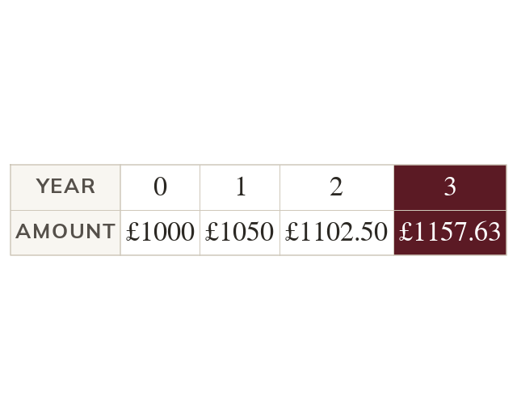

Interest on the interest
Each year's interest is worked on the amount so far, interest included. So the multiplier is used once for every year. Here, at is × each year.
Compound interest is worked out on the amount at the start of each year, including interest already added. So the multiplier is used once for every year.